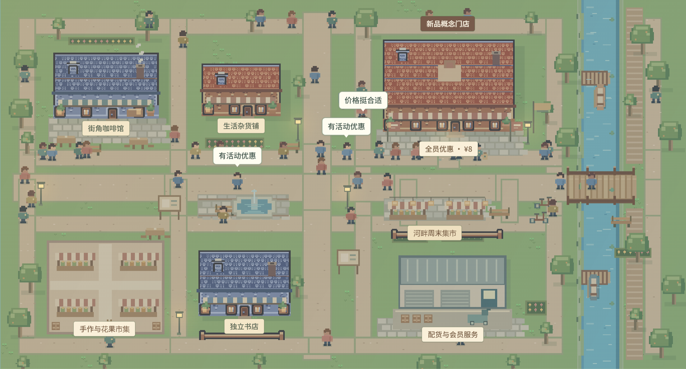

PolicyLab
公共服务决策比较服务网点、开放时段与居民可达性。
进入工作台智演是一套决策预演工作台。它将经营、增长和公共服务方案放进可观察的城市场景，帮助团队比较策略、理解人群路径，并形成真实验证计划。

不同客户面对不同问题，但都需要在方案进入现实之前，先比较行动、资源与人群反应。
设置地图、设施、客流、人群和候选行动。
查看地图、人物、目的地和不同人群的反馈。
比较指标、资源边界和验证计划，再进入真实试点。
当前网站是透明的前端预演版本，使用确定性的行业假设模型，不连接真实业务数据或后台多智能体推理。
场景人物用于解释可能的行为路径。真实项目需要使用获授权的数据校准，并通过 A/B 测试、现场试点或其他实验验证。